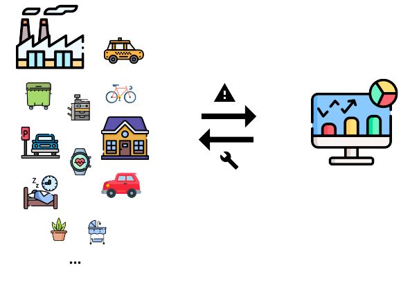

Connected Objects
Pascal Bodin
Document history
| When | What |
|---|---|
| 13-Sep-2023 | Computer reminders section improved |
| 02-Jan-2023 | Floating-point arithmetic - Sigfox update |
| 18-Dec-2021 | Links to platforms |
| 11-Dec-2021 | Standardization section |
| 13-Nov-2021 | More about software - Case studies |
| 05-Mar-2021 | Added how to navigate, UDP lab |
| 24-Feb-2021 | Added links to STM32 and ESP32 hands-on labs |
| 21-Feb-2021 | Added link to a BLE hands-on lab |
| 19-Jan-2021 | Creation |
This work is licensed under a Creative Commons Attribution-NonCommercial-ShareAlike 4.0 International License
You can sponsor it:
Credits
- reveal.js - Copyright (C) 2020 Hakim El Hattab
- Freepik from www.flaticon.com
- material.io
- Matomo
How to navigate
- Use the right and left arrows (in bottom right corner) to navigate from one topic to another
- In a topic, use the top and down arrows

Contents
Foreword
Introduction
Example used throughout the presentation
Connected device
Positioning
Communications
Architecture
Security
Standardization
Project management
Conclusion
Hands-on labs
Foreword
Who am I?
-
Independent consultant - connected devices


- Half-time senior software engineer
 - appointed Orange Expert (embedded software for connected objects)
- appointed Orange Expert (embedded software for connected objects)
- Software engineer, project leader, team manager, co-founder, etc.
- First connected objects project in 1990
More information
Integrator's point of view
- Deliver on committed date and committed budget
- Deliver a working system
- Sometimes: integrate legacy subsystems
- Deliver a maintainable system
- Target: customer satisfaction
- Solving technical problems is only a means
Which systems ?
- Consumer systems
- Industrial systems
Consumer systems- Industrial systems
Industrial systems:
- Feature-rich
- Technical complexity
- More constraints (real time, security, maintainability, etc.)
Introduction
Some history
Before the '90s

SCADA (Supervisory Control And Data Acquisition)
In the '90s

M2M (Machine to Machine) LBS (Location Based Services)
In the '00s
IoT (Internet of Things)
In the '10s
- Smart Agriculture
- Smart City
- Smart Environment
- Smart Health
- Smart Industry
- Smart Utilities
- ...
Definition?
The Internet of things (IoT) describes the network of physical objects ("things") that are embedded with sensors, software, and other technologies for the purpose of connecting and exchanging data with other devices and systems over the Internet.
The topic of this presentation
Systems where objects are connected to some remote applications
⇒ Broader than the above definition
Inventor of IoT acronym
Kevin Ashton - 1999
Points to remember
- No real definition - too broad a topic
- Systems were existing before the IoT acronym
- Large diversity of user needs
- Different technologies
Example used throughout the presentation
Expressed requirements
- Monitor a convoy of 5 vehicles over Europe
- Transmit an alarm when:
- The distance between 2 consecutive vehicles exceeds a limit
- A driver presses an emergency button
- When an alarm occurs:
- Display the alarm at the operations center
- Live display of the positions of every vehicle until the end of the alarm
- Audio monitoring
- Outdoor coverage must be global

Looking at requirements
- What is the average distance between vehicles?
- Should the distance limit be modifiable?
- Which accuracy?
- How to handle road traffic constraints?
- Alarm reception delay?
- Alarm shutdown procedure?
- Installation of equipments in the vehicles?
- Power supply?
- Limitations for installation of external components (antennas)?
- etc.
Technical fields
- Distance between vehicles: sensors, GNSS...
- Manual alarm triggering: sensor
- Alarm transmission: wireless network
- Embedded / onboard devices
- Vehicle tracking: GNSS, GIS...
- Global coverage: land mobile networks, satellite...
- Confidenciality, integrity, availability
- Software
- etc.

Undertanding real user needs can be a challenge. But it is key to success.
We will see in detail all these elements...
Connected Device
Positioning
Our example
- Tracking on alarm
- Distance between two vehicles:
- Location of every vehicle
- Exchange of locations
- Calculation of distances
- Question: which precision?
GNSS (Global Navigation Satellite System)

Principle:
- Satellite constellation
- Every satellite transmits messages
- Receiver, where location is to be calculated
- Messages contains satellite time and location
- Satellite time very accurate (atomic clock)
- With 3 satellites: location estimate
- With a 4thsatellite: synchronization of receiver clock
- ⇒ Location
- Duration/distance : 1 m ⇔ 3,3 ns
- Possible sources of errors:
- Satellite location: 2,5 m
- Satellite clock: 1,5 m
- Atmospheric perturbations: 6 m
- The most important one: multipath (reflections of satellite signals - urban canyons)
Example of Galileo accuracy

Constellations
- GPS:
- USA
- Started in 1973, operational in 1993
- 30 operational satellites in September 2020
- Orbits: 20200 km (MEO)
- GLONASS:
- Russia
- Started in 1976, operational in 1995
- 24 operational satellites in October 2020
- Orbits: 19100 km (MEO)
- Galileo:
- Europe
- Started in 1999, operational in 2016
- 24 operational satellites in October 2020
- Orbits: 23200 km (MEO)
- BeiDou (北斗):
- China
- Started in 2000, operational in 2020
- 30 satellites launched from 2017 to 2020
- Orbits: MEO, GEO and GSO
- NavIC:
- India
- Tegional system
- 8 operational satellites in 2020
- Orbits: GEO and GSO
- QZSS:
- Japan
- Regional system
- 4 operational satellites in September 2020
- Orbits: QZO
Accuracy: real-world example

Conditions:
- Smartphone GNSS receiver - GPS + GLONASS
- In 2017
- Indoors, street level, 2 m from a window
- One location every 2 s during 15 min
- ⇒ Several locations more than 60 m far from real location
Increasing accuracy
- Broadcasting corrections on regional area
Decreasing acquisition time
- First-location acquisition time: Time To First Fix (TTFF)
- To decrease it: provide GNSS receiver with almanacs and ephemeris
- These data must be transmitted to the device
- Historical name: A-GPS (Assisted GPS)
Interfacing with a GNSS receiver
- Physical level: serial link (board voltage or V.28)
- Data level:
- NMEA 0183 - not designed for GNSS
- Very often: optimized proprietary protocols

Proprietary protocols:
- SiRF (Qualcomm)
- u-blox
- SkyTraq
- etc.
- Most GNSS receivers are multi-constellations
- Antenna quality and placement are important
- It's easy to degrade reception
Positioning with a fixed infrastructure
- Trilateration: several distance measurements resulting from time measurements (similar to GNSS)
- Triangulation: several angle measurements
- Receiving antenna location ("cell")
- Beacons, for proximity detection
Dead reckoning
- Start from a known location
- Path tracking thanks to sensors: gyroscope, accelerometer, magnetometer...)
- Sensor data filtering and fusion
- Periodical resynchronization
Indoors
- Previous technologies may be used indoors, with varying results
- Installation of dedicated infrastructure is often required, for good results
Our example
- Power supply should be accessible, in the vehicles
- ⇒ No energy constraint
- It seems that inter-vehicle distance calculation may rely on GNSS data
- Where to place the GNSS antenna? Where to run the antenna cable?
Points to remember
- GNSS, not GPS 🙂
- Accuracy increases
- Acquisition time decreases
- Required energy decreases
- But it is still challenging today to position everywhere everytime
- Do not confuse positioning and tracking
Communications
Our example
- Transmit an alarm to the operations center
- Audio monitoring
- Real-time tracking
- Global coverage
- Communications between vehicles
Foreword
- Parts of the information below relate to Europe only, or to France only
- But similar elements apply in the rest of the world, with some differences in technology and in regulation
Land mobile networks
Overview
- 1G: '80s - analog networks
- 2G: '90s - digital switchover
- Services: voice, data, SMS
- Technologies: GSM/GPRS, EDGE, CDMAOne, PDC, iDEN, IS-136, D-AMPS
- 3G: '00s
- GSM/GPRS evolution, CDMA2000 1X/EVDO, UMTS-HSPA+
- 4G: '10s
- LTE Advanced
- 5G: '20s
- A network is shared among all users
- (Almost) no priority management
- Operators aim at providing coverage for population, not for territory
- Coverage can't be adapted to specific needs
- Regulated frequency bands
Data services
SMS (Short Message Service)

- 140 bytes, or 160 7-bit characters, or 70 UCS2 characters
- Concatenation is possible
- No end-to-end acknowledge
- Latency: may be high (several hours)
- Benefit: allows to send downlink data (to a terminal)
Packet data
- Based on Internet potocols (IP, TCP, UDP, etc.)
- Some limitations may apply, depending on the subscription (protocols, ports)
- 2G:
- GPRS (General Packet Radio Service) - 2,5G
- GPRS services are closed, are being closed, or will be closed
- 3G:
- Rural area: 144 kb/s at least - 384 kb/s at most, 500 km/h at most
- Urban area: 384 kb/s at least - 512 kb/s at most, 120 km/h at most
- Close to the base station: 2 Mb/s at least, 10 km/h at most
- 4G:
- 100 Mb/s downlink, 50 Mb/s uplink
- optimized for slow speed, but supports high speed, 500 km/h at most
- Historically, data services designed for:
- E-mails
- Web browsing
- Playing movies
- Connected devices have specific needs and constraints:
- Infrequent, short messages
- Often: no external power supply
- Often: low cost
- To fulfill these needs: LPWAN (Low Power Wide Area Network)
- NB-IoT (Narrowband IoT)
- LTE-M (Long Term Evolution - Category M1) (LTE = 3G → 4G)
- Other LPWAN technologie: see further below

- PSM (Power Saving Mode): decreased signalling
- eDRX (Extended Discontinuous Reception): receiver switched off part of the time
- HLCom (High Latency Communications): buffering and dedicated signalling for PSM and eDRX
- Half Duplex Mode
- CE (Coverage Enhancement): repetitions on data and control channels
- etc.
- Targets:
- Achieve a 10 year battery life
- Simpler terminal ⇒ less expensive
Characteristics
- Speed: 1 Mb/s uplink and downlink
- Latency: from 10 ms up to 4 s
- Voice

- PSM (Power Saving Mode): decreased signalling
- eDRX (Extended Discontinuous Reception): receiver switched off part of the time
- Coverage Extension : increased power levels and repetitions
- etc.
- Targets:
- Achieve a 10 year battery life
- Simpler terminal ⇒ less expensive
Characteristics
- Speed: up to 158 kb/s uplink and 124 kb/s downlink
- Latency: 1,4 up to 10 s
- Voice not supported
Active networks (August 2020)
- LTE-M: 46 networks
- NB-IoT: 96 networks
- In France:
- LTE-M: Orange
- NB-IoT: SFR
How to integrate a mobile network terminal
Two main possibilities:
- Separate terminal controlled by the application
- The application is in the terminal
Separate terminal
- Physical layer: serial link (board voltage or V.28)
- Data layer:
- "AT commands"
- 3GPP TS 27.007
Command format

Response format

Commands
- Around 300 commands:
- Voice calls management
- Network services management
- Data services management
- Terminal information
- etc.
- Every manufacturer adds their own commands:
- GPIO
- File system
- TCP and UDP sockets
- FTP, HTTP, ping, CoAP, MQTT, LwM2M
- GNSS
- Date and time
- etc.
Modes of operation

- Data: requires the activation of a PDP (Packet Data Protocol) context
- Selection of the destination network: APN (Access Point Name)
- Internet, intranet
- Allowed protocols and ports
- etc.
Using PPP (Point to Point Protocol)

Using an internal TCP/IP stack

Application in the terminal
- Often, two processors: mobile network stack and application
- An API (Application Programming Interface) provides access to services
- OS (Linux) or RTOS (Thread-X, etc.)

Unlicensed LPWAN
Some frequencies can be used without a license.
Regulation
- International recommendations (ITU, CEPT, etc.)
- National regulations
⇒ ISM (Industrial, Scientific and Medical) frequencies
- Initially, assigned to non-telecommunication applications
- Nowadays, used for Wi-Fi, Bluetooth, Zigbee, etc.
- Services must accept harmful interference
- 6,7 MHz - 13 MHz - 27 MHz - 40 MHz - 433 MHz - 915 MHz - 2,4 GHz - 5,8 GHz - 24 GHz - 61 GHz - 122 GHz - 245 GHz
⇒ SRD (Short Range Devices)
- Must offer a low risk of interference with other radio services
- In case of interference: no protection from regulations
- Can use ISM frequencies and some additional ones (868 MHz, etc.)
- Limited power: 1 to 500 mW e.r.p. depending on frequency
- Possible limitation of overall transmission time (duty cycle): 1% to 0,001% depending on frequency
Two main types of LPWAN networks
- Sigfox networks
- Networks based on LoRaWAN technology

Radio:
- From terminal to network: asynchronous transmission
- Messages repeated three times, on three frequencies
- UNB (Ultra Narrow Band)
- Modulations: DBPSK (Differential Binary Phase Shift Keying) and GFSK (Gaussian Frequency Shift Keying)
- Proprietary technology
- Frequencies: 862 to 876 MHz, 902 to 928 MHz, depending on region
- Bandwidth: 100 Hz
- Speed: 100 b/s or 600 b/s, depending on region
Application payload:
- Uplink: 12 bytes
- Downlink: 8 bytes
- Limited number of messages per day and per terminal
Coverage

- Beware: presence map, not coverage map
Note: Unabiz acquired Sigfox in Apr-2022. Unabiz is an IoT service provider and Sigfox Operator for Singapore and Taiwan

Radio: LoRa
- Spread spectrum based on CSS (Chirp Spread Spectrum)
- Error correction in physical layer
- Proprietary technology
- Bandwidth:
- Uplink: 125 kHz or 500 kHz
- Downlink: 500 kHz
- Orthogonal spreading factors
- Data rate can adapt to conditions
- Uplink: 980 b/s to 12500 b/s
- Downlink: 980 b/s to 21900 b/s
LoRaWAN
- Communication protocol + system architecture
- ⇒ Interoperable LoRaWAN networks and terminals
Terminal classes
- Class A (All): communication initiated by the terminal - then two successive receive windows
- Class B (Beacon): class A + periodical, synchronized receive window
- Class C (Continouous): continous reception, when no transmission
Application payload:
- 51 to 222 octets, depending on data rate
- Data rate may be adaptative ⇒ variable payload size
Networks
- Beware: presence map, not coverage map
- 148 operators, in 162 countries
- In France:
- Objenious (Bouygues Telecom)
- Orange
- Community networks:
- It's possible to set up your own network
Satellite networks
Geosynchronous Equatorial Orbit (GEO)
- 36000 km above Earth
- Satellite appears at a fixed position to ground observers
- Coverage restricted to area "below" the satellite
- Minimal end-to-end latency: 2 x 36000 km / 300000 km/s ⇒ 240 ms

- BGAN M2M
- IP - up to 448 kb/s
- Latency: > 800 ms
- Coverage: almost global
- IsatM2M
- 10-byte or 25-byte uplink messages / 100-byte downlink messages
- Latency: 30 to 60 s
- Coverage: almost global
- IsatDataPro
- 6400-byte uplink messages / 10000-byte downlink messages
- Latency: 15 to 60 s
- Coverage: almost global
- Several data services
- Coverage: 2/3 of the globe
Low Earth Orbit (LEO)
- Altitude of 2000 km or less
- (Earth radius: around 6400 km)
- (ISS: between 330 and 420 km)
- Period: from 80 to 130 min
- Latency: often longer (store and forward...)
- Lower terminal power transmission
Older operators:
New operators:
PMR (Professional/Private Mobile Radio) networks
Information for France
PMR networks:
- Independent networks
- For professionals, State services, hospitals, local authorities, etc.
- Voice is the primary service
- Local or regional coverage
- Licensed frequencies:
- 29-54 MHz
- 54-68 MHz
- 68-87 MHz
- 146-174 MHz
- 174-230 MHz
- 406-430 MHz
- 440-470 MHz
- Frequency management: Agence Nationale des Fréquences (ANFR)
Technologies
- There are still some analog networks (voice - data is possible)
- Digital standards:
 (Digital Mobile Radio) :
(Digital Mobile Radio) :
- TDMA (Time Division Multiple Access) on 12,5 kHz or 6,25 kHz
- Up to 9600 b/s (raw throughput)
- Short messages and UDP/IP
 (Digital Private Mobile
Radio) :
(Digital Private Mobile
Radio) :
- FDMA (Frequency Division Multiple Access) on 6,25 kHz
- Up to 4800 b/s (raw throughput))
- Short messages
- Allow to:
- Communicate from terminal to terminal (directly)
- Trunking: network shared between several groups of users
FDMA - TDMA

Other digital standards:
 (TErrestrial Trunked RAdio) :
(TErrestrial Trunked RAdio) :
- For shared networks
- SDS (Short Data Service) - messages of up to 256 bytes
- Status messages
- Circuit-switched data
- Packet-switched data (IP) - up to 14 Kb/s
- TEDS (TETRA Enhanced Data Service): allows video streams
Other digital standards:

- For shared networks
- SMS (Short Message Service)
- Status messages
- Packet-switched data (IP)
- Networks not well known to the wider public, but are many:
- in 2018, 25000 PMR networks in France
- fit well applications requiring local or regional coverage
- benefits:
- Coverage can be adapted to suit application requirements
- Exclusive use of the frequencies (when no trunking)
- Legal protection against interferences
Short distance radiocommunications

- Based on IEEE 802.11 standard
- Wireless Local Area Network (WLAN)
- ISM frequencies: 2,4 GHz and 5,8 GHz
- 802.11g: up to 54 Mb/s - later standards allow more
- Range: around 100 m
- Recently: Wi-Fi HaLow (802.11ah) for the IoT:
- ISM frequency: 915 MHz
- Range: around 1 km
- Good building penetration (narrow band)
- Low energy consumption

- ISM frequency: 2,4 GHz
- Two radio modes:
- LE (Low Energy) - up to 2 Mb/s - point to point, broadcast, mesh
- Classic - up to 3 Mb/s - point to point
- Range : More than a kilometer. Less than a meter. - Observe local regulations!
Hands-on Lab: Bluetooth advertisement data
Receiving and decoding advertisement data transmitted by a Ruuvi tag
Parts:


- A Ruuvi tag - an open-source
sensor node:
- Humidity + pressure + temperature sensor
- Accelerometer
- Bluetooth Low Energy
- An ESP32-DevKitC - a development board based on the ESP32, a Wi-Fi + Bluetooth microcontroller
- SRD/ISM frequency: 2,4 GHz and 868 MHz in Europe, 915 MHz in the USA
- Self-organizing mesh network
- Several hundreds of devices on a single network
- Device types: Coordinator, Router, End Device
- Data rate: 250 kb/s
- Range: 300 m line of sight, 75 to 100 m indoors
- Low energy consumption

- SRD/ISM frequencies: 868 MHz in Europe, 915 MHz in the USA (not on Wi-Fi/Bluetooth frequencies)
- Mesh network
- Up to 232 devices on a single network
- Data rate: up to 100 kb/s
- Range: 100 m line of sight
- Low energy consumption
Z-Wave Long Range
- Announced in Dec-2020
- Should supports distances of up to several miles
- Should support up to 4000 nodes on a single network
Proprietary protocols
- You can design your own protocol, or use an existing proprietary protocol
- You have to comply with local regulation
Our example
- Global coverage ⇒ satellite networks
- Small latency, for alarm transmission ⇒ GEO constellation
- To decrease latency even more: use land mobile networks when available
- Exchanging locations between vehicles to calculate distance:
- Short distance communications
- Two frequencies at least, to prevent interference attacks
- Proprietary protocol, to increase security
Points to remember
- Differentiate standard / radio technology / regulation / operator:
- A technology may be used on different frequency bands (e.g. private 4G networks)
- A standard may describe services that won't be provided by an operator
- A technology may be provided by several different operators (4G, LoRaWAN, etc.)
- Could ISM/SRD frequencies be saturated in some future?
- It is possible to install and run your own network (PMR, LoRaWAN)
- It may be required to integrate several different technologies
- Beware: with radio, data loss is certain
Data interchange
Stream or message?
- Sensors: a few (tens of) bytes
- Measured data
- Identifier
- Date and time
- Location
- etc.
- Actuators: a few (tens of) bytes
- Command to be executed
- Identifier
- etc.
- ⇒ Messages
- Voice: stream
- Video: stream
- Images: (large) messages
We will look at messages. Voix and video transmission is rare, but sometimes required (as in our example).
Why messages?
- The receiving application has to know when it has received all data related to one measure, from a sensor.
- An actuator has to know when all the information related to the command it has to execute has been received.
What is a message?
- A sequence of bytes containing all the information required for a given processing.
Technologies with message-type interface
- UDP/IP
- SMS
- LoRaWAN, Sigfox
- Messages over satellite networks
- Messages over PMR networks
- etc.
Message-type interface

Stream-type interface
Beware!
TCP/IP is a stream-oriented protocol!
Back to the serial link
- How are built the messages of a GNSS receiver?
- How are built the AT commands and responses?
- ⇒ use of delimiters (start, end)
General solutions for a simple case
- Assumed:
- No error (loss, modification)
- Data exchange does not modify data order
- (For instance: TCP/IP)
- Solution 1: time
- Wait for a minimum time between two successive messages
- Maximum time between two successive bytes must be smaller than inter-message time
- Inter-message time must be greater than jitter
- Solution 2: delimitation
- Specific start sequence
Problems with message contents
Problem 1
- Let's assume that we use solution 2, with byte of value 01 as a start delimiter.
- Question: how to send value 01 in a message?
- This is the transparency problem.

Problem 2
The 32-bit integer 11223344 can be stored in memory in two ways:
- Question: how to exchange a 32-bit integer between two computers using memory in different ways?
- This is the endianness problem.
Vocabulary:
- Big-endianness: Most Significant Byte at the smallest address
- Little-endianness: Least Significant Byte at the smallest address
- Bi-endianness: two configurations are possible
Big-endian: 68000 microcontroller, AVR32 microcontroller, etc.
Little-endian: x86 microprocessor, etc.
Bi-endian: Arm cores, etc.
Problem 3
How to echange data structures between computers?
struct sensor {
uint32_t sensor_id;
char sensor_name[20];
struct {
double latitude;
double longitude;
} location;
};
- Generalization of the endianness problem.
- This is the serialization problem.
To answer these problems (delimitation, transparency, endianness, serialization):
- More or less complex to define your own solution
- If you haven't any preliminary experience, choose an existing solution!
Serialization, endianness and delimitation
- ASN.1 (Abstract Syntax Notation number 1):
- Maintained by the ITU (International Telecommunication Union)
- Notation allowing to define data structures independently from their encoding
- Associated standard encoding rules (BER, PER, etc.)
- Code generators for many programming languages
- Self-delimiting
Serialization and endianness
- Protocol Buffers:
- Developed by Google (who did not know ASN.1?)
- Code generators for many programming languages
- Requires additional delimitation
Serialization, endianness and delimitation
- CBOR (Concise Binary Object Representation) :
- Defined by the IETF (Internet Engineering Task Force) - RFC 7049
- Based on JSON
- Self-delimiting
- Libraries available for many programming languages
Serialization, endianness and delimitation
For specific needs: relatively easy to define your own formatting.
Communication (+ delimitation and transparency)
- MQTT:
- Message Queuing Telemetry Transport
- But does not use message queueing, and is not restricted to telemetry
- Requires a specific transport layer: ordered and lossless (TCP)
- Mixes messaging protocol and publish/subscribe service
- A non-TCP version exists (for Zigbee, etc.)
- OASIS Open standard
- Several open source implementations
Communication (+ delimitation and transparency)
- CoAP:
- Constrained Application Protocol
- Model similar to HTTP: requests on resources
- Designed for UDP
- IETF standard: RFC7252
- Several open source implementations
Communication (+ delimitation and transparency)
- Many systems use their own (proprietary) protocols
- Lot of buzz about MQTT and CoAP, but difficult to determine real market shares
- On TCP, not too complex to define your own protocol, simpler than MQTT
- On UDP (more generally: lossy message transport), more complex
Hands-on Lab: UDP over Wi-Fi
Parts:
- An ESP32-DevKitC
- A Wi-Fi Access Point
- A computer running Linux or macOS, reachable from the Wi-Fi Access Point
Lab:
- An application running on the ESP32-DevKitC initiates a connection to the Access Point
- A very simple UDP server is started on the computer
- The application sends messages to the server using UDP datagrams
Integration in the Internet
- Sigfox, LoRaWAN, etc: short messages
- Internet protocol headers (TCP/UDP/IP) are too long
- ⇒ Devices using these networks are not integrated in the Internet
A solution: SCHC
Static Context Header Compression - RFC 8724
- On LPWAN networks, stream nature is predictable
- ⇒ Context can be stored in the device and in the network
- ⇒ High level of header compression is possible

Our example
- For messages on satellite network: design a proprietary protocol
- For land mobile network, on TCP: design a proprietary protocol
- For inter-vehicles communication: design a proprietary protocol
- Real complexity lies in integration: handling several networks
- IP integration with SCHC
Points to remember
- The protocol depends on transport layer (with or without loss)
- On a byte-stream transport layer (TCP), message delimitation is required
- Decide on a protocol according to your experience, user needs and context
- Often a strong constraint: code size on embedded side
- With SCHC, IP may be used almost everywhere ⇒ real Internet of Things
Architecture
Distributed processing


- Functions in device communicate with remote functions (distributed application)
- Several types of networks, with different characteristics
- Many possible use cases
- ⇒ Layered architecture
Layered architecture

- Ideal vision!
- Pros:
- Separation of concerns
- Easier migration from one type of network to another one
- Reusing technical components is possible
- Easier maintenance
- etc.
Platforms
Generic group of layers allowing for:
- Abstraction of the communication layer
- Supply of a part of management services (users and devices)
- Supply of a part of the security
- Supply of some complex technical components (data analysis, machine learning, etc.)
- Scalability
- Hosting of the above services

Strangely enough, many platforms are available...
AggreGate
AirVantage
Akenza
Altair SmartWorks
Arduino IoT Cloud
Arkessa
AskSensors
Atmosphere
Avimesa.Live AWS IoT
Ayla Networks
balenaCloud
Beebotte
Blynk
Bolt
Bosch IoT Suite
Open source platforms
Pros:
- Allows to rapidly set up a full system
- Scalability (> 1000 devices?)
- May prevent from having to develop some complex technical components
Cons:
- May increase system development complexity
- May introduce uncontrolled reliability problems
- Genericity ⇒ may hinder development of bespoke systems
- Sharing ⇒ may lead to unwanted evolutions
Security
Goals
- Confidentiality
- Integrity
- Availability
Attack surface
Set of points that an attacker can use to attack a system.

How to deal with attacks
- Management governance:
- Name an executive in charge of security
- Engineered for security:
- Design hardware and software with attention to security threats
- Fit for purpose cryptography:
- Adhere to best practice industry standards
- Secure network and applications:
- Secure applications, web interfaces and server software
- Secure production processes and supply chain:
- Making sure the security of the product is not compromised in the manufacturing process or in the end customer delivery and installation
- Customer security:
- Inform the customer about vulnerabilities, provide software updates, etc.
Points to remember
- Needs for security depends on the system
- Anyway, do not underestimate - for instance: temperature in a house may indicate the absence of the occupants
- Requires a broad view
- Requires experience
Standardization
Nowadays:
- Almost all connected objects systems are closed systems:
- Device application exchanges information with only one office application
- Integrating devices from another manufacturer is usually complex or impossible
- New function integration by a third party developer is usually complex or impossible
- Integration of a new type of network by a third party is complex or impossible
- Integration of a new type of network is complex
- Etc.
How to address these constraints?
Standardization may help:
- Communication protocols
- Network interfaces
- System architectures
- Data structure
- Data semantics
- Etc.
Some preexisting applicable standards:
- V.24, V.28, TIA-232 (ex RS-232), etc., for serial communication
- I2C, CAN, etc., for serial buses
- AT commands for cellular network user equipment
- Wi-Fi, Bluethooth, etc., for short distance wireless communication
- IPv4, IPv6, TCP, UDP, etc., for the Internet
- Etc.
Note: some are de facto standards, some are de jure standards.
But new ones were required, mostly for higher layers...
- Mission:
- "We are the global community that develops IoT standards to enable interoperable, secure, and simple-to-deploy services for the IoT ecosystem. oneM2M standards are open, accessible and internationally recognized."
Value proposition:
"OneM2M standards allow any IoT application to discover and interact with any IoT device."

Functional architecture
AE: Application Entity - CSE: Common Services Entity - NSE: Network Services Entity
OneM2M standards are transposed by ITU-T.
There are some open source implementations.
- Standards development organizations (SDOs):
- Two industry fora/consortia:
- Members of SDOs
Study Group 20
- Mission:
- "Address the standardization requirements of Internet of Things (IoT) technologies, with an initial focus on IoT applications in smart cities and communities (SC&C)"
The International Telecommunication Union (ITU):
- Founded in 1865
- The United Nations specialized agency in the field of telecommunications, information and communication technologies (ICTs)
The ITU Telecommunication Standardization Sector (ITU-T):
- Studies technical, operating and tariff questions
- Issues Recommendations on them with a view to standardizing telecommunications on a worldwide basis
Study Group 20 roles:
- Lead study group on Internet of things (IoT) and its applications
- Lead study group on smart cities and communities, including its e‑services and smart services
- Lead study group for Internet of things identification
ITU-T Recommendations under SG20 responsability:
- F series: Non-telephone telecommunication services
- H series: Audiovisual and multimedia systems
- L series: Environment and ICTs, climate change, e-waste, energy efficiency; construction, installation and protection of cables and other elements of outside plant
- Q series: Switching and signalling, and associated measurements and tests
- Y series: Global information infrastructure, Internet protocol aspects, next-generation networks, Internet of Things and smart cities
OneM2M standards are transposed under the Y.4500 series (17 recommendations).
Many other recommendations:
- Y.4000 - Overview of the Internet of things
- Y.4003 - Overview of smart manufacturing in the context of the industrial Internet of things
- Y.4100 - Common requirements of the Internet of things
- Y.4102 - Requirements for Internet of things devices and operation of Internet of things applications during disasters
- Y.4103 - Common requirements for Internet of things (IoT) applications
- Y.4111 - Semantics based requirements and framework of the Internet of things
- Y.4112 - Requirements of the plug and play capability of the Internet of things
- Y.4401 - Functional framework and capabilities of the Internet of things
- Y.4480 - Low power protocol for wide area wireless networks (LoRaWAN)
- Etc.
Reference model

Example - Networked vehicle and ITS infrastructure

Members: 193 states and over 900 companies, universities, research institutes and international and regional organizations
Internet of Things Directorate
- Mission:
- "Coordination within the IETF on IoT-related work, and increasing the visibility and communication between IETF IoT activities and other SDOs, industry alliances, and other organizations."
The Internet Engineering Task Force (IETF):
- large open international community of network designers, operators, vendors, and researchers concerned with the evolution of the Internet architecture and the smooth operation of the Internet.
Some RFCs (originally: Request For Comments):
- RFC7252: The Constrained Application Protocol (CoAP)
- RFC8520: Manufacturer Usage Description Specification
- RFC8576: Internet of Things (IoT) Security: State of the Art and Challenges
- RFC8724: SCHC: Generic Framework for Static Context Header Compression and Fragmentation
- RFC8949: Concise Binary Object Representation (CBOR)
- RFC9006: TCP Usage Guidance in the Internet of Things (IoT)
- RFC9019: A Firmware Update Architecture for Internet of Things
- Etc.
- Mission:
- "By providing standardized metadata and other re-usable technological building blocks, W3C WoT enables easy integration across IoT platforms and application domains."
The World Wide Web Consortium (W3C):
- International community where Member organizations, a full-time staff, and the public work together to develop Web standards.
Publications:
Web of Things build blocks
TD: Thing Description
Many other organizations
- Alliance for Internet of Things Innovation
- Connectivity Standards Alliance (formerly: Zigbee Alliance)
- DDS Foundation
- Edge Computing Consortium Europe
- GlobalPlatform
- Industry IoT Consortium
- Internet of Things (IoT) Architecture Working Group from IEEE
- Linaro - IoT and Embedded
- LoRa Alliance
- Matter (connected to Connectivity Standards Alliance)
- mioty alliance
Many other organizations - continued
Question: So many standards! What to do with them?
Answer: What you want 🙂
More seriously:
- Stay informed
- Listen to your customers
- Rely on layered architectures with well-defined interfaces
Project management
Usual industrial project

Connected objects project


- Be sure to understand real needs of users
- Ensure to be prepared to integrate required technologies
- Make dedicated tools (hardware and software) for development and tests
Problems
- A connected objects system may transform existing business processes
- It could be that the customer is not able to fully understand the impact
- The project team may be not experienced enough with some technologies
- Some technologies to integrate may be not mature enough
- Some technologies to integrate may age rapidly
- etc.
Possible solution: be agile
Value:
- Individuals and interactions over processes and tools
- Working software over comprehensive documentation
- Customer collaboration over contract negotiation
- Responding to change over following a plan
This manifesto, created for software development, can provide very good results for other types of projects.
Stay agile when applying the Agile Manifesto! 🙂


For each iteration:
- User needs definition is improved (including by the client)
- Technology components are better mastered
- The system is being built on solid foundations
- The client can see that development is going forward
About solid foundations:
- Integrate handling of connectivity issues right from the design phase
- Separate the challenges: separate proofs of concepts
- Test system elasticity (how it resists the pressure)
- Break down in layers (see architecture)
- Ensure stability and robustness of a layer before building upon it
- Develop automated tests (validation and non regression) in parallel
Developing with iterations:
- Can be used even when answering a Request for Proposal
- Good for the client and for the integrator
- To be agile is far more important than sticking to a predefined plan
For a connected objects project
- Make prototypes and present them to the users (not only to the customer)
- Test in the field as soon as possible
- If possible, implement Over The Air (OTA) updates
- Use equipment that can be upgraded
- Use equipment with more processing power than strictly required
- etc.
Case studies
Waste collection management system
Requirements:
- daily reports about waste collection tours performed the day before:
- collected points against planned collection points
- not-collected points against planned collection points
- non-planned collected points against planned collection points
- various events: bulky item, broken waste bin, backwards driving, etc.
Requirement analysis:
- The client was thinking at an in-vehicle device transmitting data in real time over a cellular network
- But reports did not require real time
Proposal:
- Location data recorded by an in-vehicle device
- Data transmitted by wire (!) at the end of the day
Advantages:
- Lower capital expenditure (no communication modules)
- Lower operating expenditure (no mobile network subscriptions)
- ⇒ Listen to the client, and understand what they really need
- ⇒ Separate functional view and technical view
Taxi dispatch system

Requirements:
- Assign the most appropriate taxi to a client request
- Mutual control between taxi drivers
- Attack alarm
- Connection to the taximeter
- Ride booking
- Etc.
Context:
- The group of taxi drivers has no experience of a dispatch system
- Do not know the number of rides per day
- The provider:
- Doesn't know the job of a taxi driver
- Has no experience of some technical elements
Proposal:
- Quickly set up a first, minimal version of the system
- Then progress step by step
- Add new functions depending on how telephone operators and taxi drivers use the system
- Plan to make the radio network evolve, depending on traffic
- ⇒ Iterations to allow the client to better define their needs
- ⇒ Iterations to give time to the provider to master some technical elements
- ⇒ Iterations to make progress visible
Operations support system for urban buses
Requirements:
- Start of service and end of service for drivers
- Display next stop to the driver and planned arrival time
- Alarm displayed at operation center when a bus is delayed or ahead of time
- Attack alarm
- Fuel consumption (connection to the flowmeter)
- Etc.
Context:
- The drivers could feel monitored by the system
- ⇒ risk of strike
Proposal:
- Proceed in stages
- Deliver the functions useful for the drivers first:
- Attack alarm
- Personal downlink short messages (not planned initially)
- ⇒ Identify the needs of the users (drivers), in addition to expressed customer requirements
- ⇒ Deliver functions with most of the value for the users first
GPRS

Context:
- GPRS was the first packet data service available on GSM networks
- Introduced by the telecommnuication operators as the equivalent of LAN/WAN communication service
Reality:
- Two non-documented characteristics:
- A TCP session with no traffic during n minutes is closed by the network
- Radio context close every n hours, even if there is some traffic
- Not a problem for developers already experienced in using radio networks
- But put other ones in trouble (trying to use LAN equipments and software)
- ⇒ Reading the technical documentation is not enough, you have to test
- ⇒ Trying to reuse existing technical solutions from another domain may be a bad idea
- ⇒ Integrate error handling right from the start
Outsourcing the design of a device

Context:
- Need for a device that can control a radio transceiver and a handset
- Design outsourced to a well-known radio systems manufacturer
Result:
- Late delivery
- Load tests rapidly exhibit a hardware design flaw and a major software design flaw
- Too little time to modify the electronic design
- Source code is requested
- Fortunately, a software workaround is found
- ⇒ Test elasticity as soon as possible
- ⇒ Never believe an outsourced design will be flawless, especially when working with a large company
- ⇒ Always get the broad view (here: software + hadrware
Outsourcing the design of a device - chapter 2
Context:
- Request for a corrected version of the device
- The manufacturer proposes a device designed to fulfill needs from additional customers
- ⇒ Too complex
- ⇒ Too expensive
Result:
- Make an inhouse design
- It's more costly, on short term
- But provides a very good return on investment, on long term:
- Very good fit with needs
- Production adapted to each client (expansion board, components not soldered depending on needs)
- ⇒ In a connected objects system, the device is the technical core: it's essential to master it
- ⇒ This example is quite old. Nowadays, the design could have been derived from an existing open source design
Malfunction of an embedded device
Context:
- A thousand of embedded devices, installed in vehicles, stop functioning
- The Over The Air update procedure (over cellular network) does not work anymore
- An audit of the device is requested
Audit results:
- Embedded software quality is very low
- It has been written by a senior developer. But experienced in the field of web applications
- The OTA update procedure writes received bytes directly into memory, without any flow
control:
- If loss of coverage while updating, the embedded software is corrupted
- If network throughput is too high, data is lost ⇒ update failure
- ⇒ The project leader is at fault: they didn't assign the right person to the task
- ⇒ The project leader had no experience in the field ⇒ their manager is at fault
- ⇒ Software development is not a monolithic domain: developing embedded software is different from developing a web frontend, which is different from developing a backend application
Autonomous sensing system
Requirements:
- Design an autonomous fine particle pollution sensing system
- It must upload data to a remote application on a periodic basis
Proposal:
- Electronic board with a low-power microcontroller
- Battery charged thanks to a photovoltaic solar panel
- But data upload protocol is very energy intensive:
- Data is encoded in ASCII instead of being encoded in binary
- FTP is used, instead of a simple application protocol, over TCP or UDP
- The designer was experienced in the sensor domain, but not in protocol domain
- ⇒ Assess your experience per domain, so that you can know when to ask for help
- ⇒ Ensure to get a global view (hardware + software)
Conclusion
- Developing a connected objects system can be challenging:
- Wide variety of user needs ⇒ can be difficult to find references
- It can be difficult to get the real user needs
- Several different technological fields have to be mastered
- Compared to other types of projects:
- Spend time with the users (and not only with the customer)
- Prepare for getting experienced in required technologies before the project starts
- Ensure you have the big picture in mind
- Be agile
- Look for T-shaped team members
But this is a wonderful domain! 🙂
Thanks!